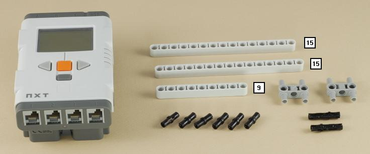

Fun Projects for your LEGO� MINDSTORMS� NXT!
|
|
Fun Projects for your LEGO� MINDSTORMS� NXT! |
| Inch Worm |
|

1
2
3
| The large black gear allows you to turn the motor by hand to adjust its position. |
4
5
| Note: Make sure the parts are not too tight against the beam. The axle should spin freely. |
6
Make sure you use a gray peg, not a black one. It must allow the small beam to turn freely.
7

8
9
Important: Be careful to attach the part with the wheels right side up. Look at the picture carefully.

10

11

12
Make sure you use the beige and gray pegs, not the blue and black ones. The parts must turn freely.
13

14

15
Important: Be careful to attach the part with the wheels right side up. Look at the picture carefully.
16
| Use a short wire to connect the motor to port B on the NXT. You can wrap the wire as shown to keep it out of the way. It is a little tight, but it fits. |
| Inch
Worm Programming Use the program Inch Worm for your Inch Worm. |
| Use the large black gear to turn the motor by hand until the inch worm lies flat against the floor and has all four wheels touching the ground before running the program. The inch worm should always be flat before you start it. |
| Challenge
Can you figure out what makes the inch worm moves
forward? What do all the different gears do? |
|
Copyright
�
2007-2009 by Dave Parker. All rights reserved. |